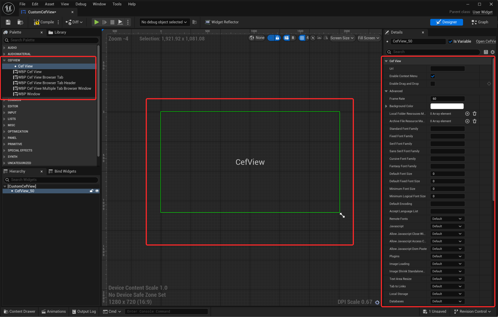

1. Installation
- Install UCefView from Fab for your Unreal Engine version. Enable it in each project that uses it. A source distribution can instead be placed at <Project>/Plugins/UCefView.
- Ensure the plugin is enabled in the Plugins window (Edit -> Plugins).
- Open Edit > Project Settings > Engine > UCefView Settings > XCef SDK. Refresh the catalog, download/install a compatible SDK, and choose Use for this project.
- Restart the Editor to load the selected SDK. SDK selection does not require recompiling the project. An initial SDK error dialog lets you continue to the settings panel.
XCef SDKs are installed separately from the plugin. UCefView hosts CEF in XCefHost and can coexist with Unreal's built-in Web Browser plugin; the old CEF3 folder workaround is no longer needed. Enable only one installation of UCefView in a project: either the Engine plugin or a project plugin.
The Editor and PIE load the selected shared SDK directly. Editor builds, including Live Coding, do not copy or clean its runtime files. Close Editors using an SDK before removing or modifying that installation.
2. Configuration Project Settings
Navigate to Edit > Project Settings > Engine > UCefView Settings to configure the global browser settings for your project. Key settings include:

UCefView Settings
- Locale: Sets the locale for the CEF browser.
- User Agent: Defines the user agent string used by the browser.
- Accept Language List: Specifies the accepted languages for web requests.
- Command Line Args: Additional command-line arguments to pass to the CEF browser process.
- Builtin Scheme Name: The scheme name for builtin resources.
- Bridge Object Name: The name of the JavaScript object used for the C++ bridge.
- Disable Sandbox: Whether to disable the CEF sandbox in XCefHost.
- Note
- Regarding macOS platform, CEF doesn't support sandbox enable on main process, this means if you want to ship a game product with UCefView plugin, you need to disable the App Sandbox feature for your Unreal project in generated Xcode project.
For more details, please refer to the UCefSettings class.
3. Using SCefView (Slate)
- In your Slate-based UI, include the SCefView.h header file.
- Create an instance of the SCefView widget.
- Use the SCefView::SetUrl method to load a URL into the WebView.
- Customize the appearance and behavior of the WebView using the FCefViewSettings structure.
- Bind events such as SCefView::OnLoadStart, SCefView::OnLoadEnd, and SCefView::OnConsoleMessage to handle WebView events in your C++ code.
TSharedPtr<SCefView> MyWebView;
.Url(TEXT("https://www.google.com"))
.OnLoadStart(this, &SMyWidget::HandleLoadStart)
.OnLoadEnd(this, &SMyWidget::HandleLoadEnd)
Declares the SCefView class, a Slate widget that hosts a CEF browser.
A Slate widget that embeds a Chromium Embedded Framework (CEF) browser.
Definition SCefView.h:42
4. Using UCefView (UMG)
- Open your Widget Blueprint in the UMG editor.
- In the Palette window, search for UCefView and drag it into your widget hierarchy.
- In the Details panel, set the UCefView::Url property to load a URL into the WebView.
- Customize the appearance and behavior of the WebView using the available properties.
- Bind events such as UCefView::OnLoadStart, UCefView::OnLoadEnd, and UCefView::OnConsoleMessage to handle WebView events in your Blueprint graph.
5. Using Blueprint
UCefView provides several Blueprint widgets, you can customize your own browser with them.
- WBP_CefView: A basic user widget that encapsulates a single UCefView component.
- WBP_CefViewBrowserTab: A user widget that includes a UCefView component along with an address bar and navigation buttons (back, forward, reload).
- WBP_CefViewSingleTabBrowserWindow: A complete single-tab browser window widget.
- WBP_CefViewMultipleTabBrowserWindow: A complete multiple-tab browser window widget.

Custom With Blueprint
6. Packaging a game
Install the SDK for each target platform/architecture and keep its selection in the project's Config/DefaultEngine.ini. The build machine needs the selected SDK installed; UnrealBuildTool does not download it.
Game builds copy the selected runtime to <Project>/Binaries/ThirdParty/XCef/<platform[/architecture]> and stage it as loose NonUFS files. Distribute the complete packaged output, including these runtime files. Players do not need the SDK manager, a shared SDK installation, or a download on first launch.
These steps apply to both Engine and project installations of UCefView. Close running games before rebuilding their runtime files. See XCef SDK Management for SDK paths, version selection, and troubleshooting.